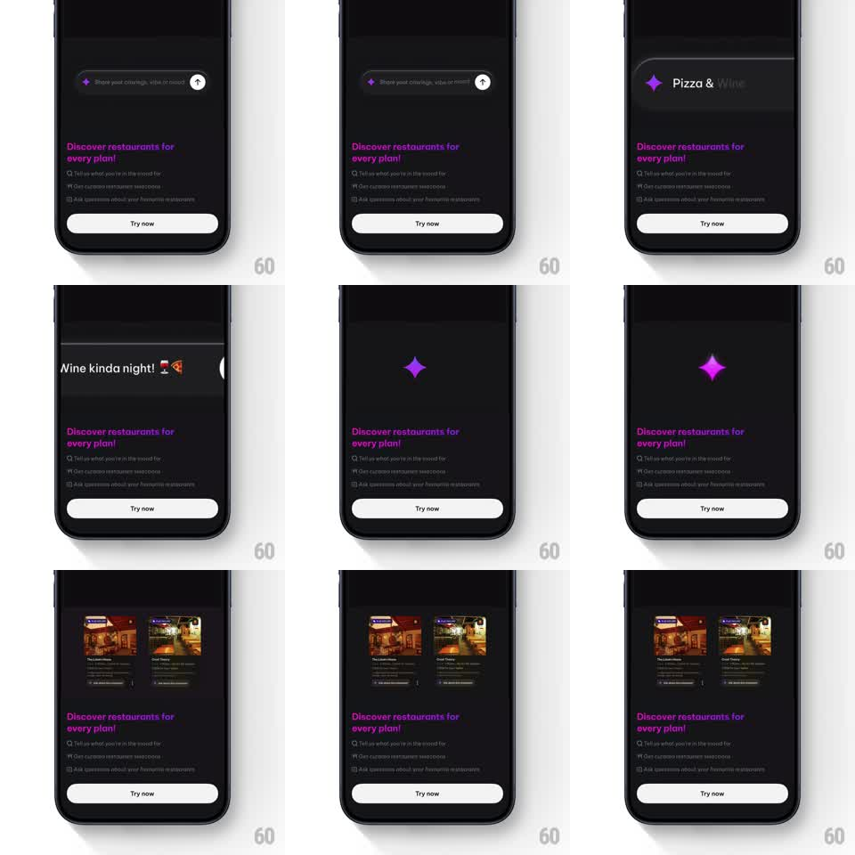

Media
Frame-by-frame

Rebuild this animation 1:1: District's Ask AI intro - the prompt pill morphs into a pulsing purple star while the screen sparkles, then curated restaurant cards slide in as the answer.

Rebuild this animation 1:1: District's Ask AI intro - the prompt pill morphs into a pulsing purple star while the screen sparkles, then curated restaurant cards slide in as the answer.
## Integration
Integration: stack-agnostic spec - springs given as stiffness/damping, timed motions as duration + curve; map every value to your framework and animation library of choice.
## Scene
District dark sheet: pink headline "Discover restaurants for every plan!", three bullet rows, a white "Try now" button, and a dark input pill with a sparkle icon ("Share your cravings, vibe or mood"). States: typed query ("Pizza & Wine kinda night!"), a lone pulsing purple four-point star with scattered sparkles, and two restaurant cards side by side.
## Motion spec
Pattern: input pill morphs into a pulsing star loader, then results reveal.
- The query types into the pill character by character (40ms/char) with the sparkle icon leading; the send arrow brightens when text is present.
- On send: the pill's text and chrome collapse into the sparkle icon (scale + fade, 250ms) and everything else on the sheet (headline, bullets, button) dims to 40% (300ms).
- The icon blooms into a large purple four-point star at center (scale 0.5 -> 1, spring ~300/14) which pulses (scale 1 -> 1.15 -> 1, 900ms loop) while 6-8 tiny sparkle dots twinkle around it at random offsets (opacity 0 -> 1 -> 0, staggered 120ms).
- After ~1.8s the star shrinks away (200ms) as a purple panel grows from the top of the sheet (height 0 -> 45%, 350ms ease-out) and two restaurant cards slide in from the right inside it (translateX 40 -> 0, 300ms, staggered 100ms), settling into the dark theme.
- The sheet's headline and button restore to full opacity as the cards land (250ms).
## Calibration
- The star is pure saturated purple on near-black - the only bright element during loading.
- Sparkle dots never overlap the star's core.
## Reduced motion
Pill crossfades to a static star (250ms), then cards fade in (300ms).
## Don't miss
- The pulse loop is smooth sinusoidal, not a spring - a heartbeat, not a bounce.
- Cards arrive as a pair in a shared container, not as two independent drops.